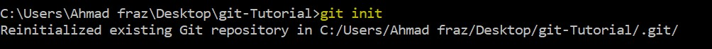

Name : Amna Azam
Roll no : BSEF19M009

What is git?
Git is a free and open source distributed version control system designed to handle everything from small to very large projects with speed and efficiency. Git tracks the changes you make to files, so you have a record of what has been done, and you can revert to specific versions should you ever need to. Git also makes collaboration easier, allowing changes by multiple people to all be merged into one source.Git is software that runs locally. Your files and their history are stored on your computer . You can also use online hosts (such as GitHub) to store a copy of the files and their revision history. Having a centrally located place where you can upload your changes and download changes from others, enable you to collaborate more easily with other developers.
Which git-commands we will see in this tutorial?

The commands are given below:
- git init
- git add
- git status
- git push
- git pull
- git checkout
- git branch
- git clean
- git clone
- git commit
- git config
- git fetch
- git log
- git merge
- git rebase
- git remote
- git rebase
- git reset
- git revert
Before proceeding, You must open command prompt in your directory and enter following commands:
1 - git init
The git init command creates a new Git repository. To initialize a repository, Git creates a hidden directory called . git . That directory stores all of the objects and refs that Git uses and creates as a part of your project's history. This folder is hidden to protect you from accidentally deleting its contents.
- To write this command, you will write git init and will press Enter.
